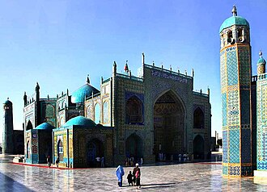

Gambaran
Rawze-i-Sharif est une mosquée bleue située au centre-ville de Mazâr-e Charîf, en Afghanistan.
The Mausoleum of Imam Ali, also known as the Blue Mosque, is a mausoleum and mosque complex located in Mazar-i-Sharif, the capital and largest city of Balkh Province in northern Afghanistan. It is a popular tourist attraction in the middle of the city, which is visited all year long by all people regardless of religion or sect.
Ali'nin Türbesi ya da Mavi Cami, Afganistan'ın Mezar-ı Şerif şehrinde bulunan, Şii Müslümanların Ali'nin mezarını içerdiğine inandıkları bir camidir. Şiiler, Ali'yi ilk halifeleri olarak görürler ve her yıl Ali'nin türbesine bir miktar para öderler.
Mausoleum Imam Ali atau Masjid Biru adalah sebuah masjid bernuansa biru di Kota Mazar-i-Sharif yang berada di Afghanistan. Masjid tersebut dibangun di atas makam khalifah keempat Ali bin Abi Talib, seorang sepupu Muhammad. Konon, salah seorang mullah mendapat wangsit dalam mimpinya bahwa makam Ali dikuburkan di suatu daerah di Afghanistan. Ia pun menceritakan mimpinya pada raja dari Kerajaan Seljuq, Ahmad Sanjar dan sebuah tempat keramat dibangun di sisi barat laut Afghanistan. Raja Ahmad juga membuat kota di sekeliling situs tersebut yang kini bernama Mazar-i-Sharif. Setelah kota dibangun, ribuan masyarakat Muslim pun bermigrasi dan tinggal di Mazar-i-Sharif. Namun, kota beserta masjid di Mazar-i-Sharif sempat hancur saat diserbu oleh pasukan Genghis Khan. Pada tahun 1481, Sultan Husayn Mizra membangun kembali tempat keramat tersebut dalam bentuk masjid yang bergaya lebih megah.
مسجد ازرق، مزار افغانستان کا ایک مسجد علی بن ابی طالب البلخی جو مزار شریف میں واقع ہے۔
Das Ali-Mausoleum in Masar-e Scharif aus dem 15. Jahrhundert, auch Blaue Moschee oder Rauza, gilt als Begräbnisstätte des ʿAlī ibn Abī Tālib, des Schwiegersohns Mohammeds und einer der wichtigsten Persönlichkeiten des Islam. Masar-e Scharif bedeutet „Schrein des Edlen“. Das imposante Mausoleum des Heiligen gehört zu den schönsten Moscheen der Welt und ist die bedeutendste Wallfahrtsstätte Afghanistans.
La mezquita Azul, también conocida como el santuario de Hazrat Ali, es una mezquita ubicada en el centro de Mazar-i-Sharif, en la provincia norteña de Balj en Afganistán.
Il santuario di Hazrat Ali, o Moschea blu, è un complesso religioso della città afghana di Mazar-i Sharif. È una rinomata meta di pellegrinaggio per molti musulmani afghani che si recano a venerare la tomba dell'imam ʿAlī ibn ʾAbī Ṭālib.
O Mausoléu do Imame Ali ou Mesquita Azul localizada em Mazar e Xarife, Afeganistão, é uma mesquita que os muçulmanos sunitas acreditam conter o túmulo de Ali. Os sunitas consideram Ali como seu quarto califa e prestam homenagem ao santuário de Ali todos os anos. Além dos dois nomes mencionados acima, o local também tem muitos outros nomes nativos como Mazar-e-Ali, Ziarate-e-Ali, Masjide-e-Ali Mazar. No exterior, a mesquita é frequentemente chamada de Mesquita Azul, em referência aos azulejos azuis claros, que predominam a aparência do edifício. Muitos peregrinos celebram anualmente o Noruz no local. Na cerimônia anual de Jahenda Bala, uma bandeira é hasteada em homenagem a Ali. As pessoas tocam a bandeira para obter suposta sorte no Ano Novo.
De Blauwe Moskee van Mazar-i-Sharif is een 15e-eeuwse moskee in het centrum van Mazar-i-Sharif in het noorden van Afghanistan. De moskee dankt haar naam aan de vele kobaltblauwe en turkooizen tegels waarmee de koepels en minaretten zijn bekleed. De moskee wordt druk bezocht door sjiitische pelgrims.
哈兹拉特·阿里陵墓 位于阿富汗马扎里沙里夫，俗称蓝色清真寺，是阿富汗最大的清真寺。逊尼派穆斯林认为这里埋葬着哈兹拉特·阿里。逊尼派将阿里视为他们的第四位正统哈里发，他们每年都向哈兹拉特·阿里敬献牺牲。
Голубая мечеть, также распространены названия Мавзолей Али а также Святыня Хазрат Али — джума-мечеть и мавзолей в городе Мазари-Шариф, который является центром вилаята (провинции) Балх Афганистана. Главный символ и визитная карточка Мазари-Шарифа и вилаята Балх. По некоторым данным, одно из предполагаемых мест погребения четвертого праведного халифа Али, зятя и двоюродного брата пророка Мухаммеда.
ฮัซรัต อะลี มะซาร์ หรือ มัสยิดสีน้ำเงิน เป็นมัสยิดในมะซารีชารีฟ จังหวัดบัลฆ์ ประเทศอัฟกานิสถาน ซึ่งชาวมุสลิมซุนนีเชื่อว่าเป็นที่ตั้งของสุสานของฮัซรัต อะลี อิบน์ อะบี ฏอลิบ ซึ่งชาวซุนนีเชื่อว่าเป็นเคาะลิฟที่ถูกต้ององค์ที่สี่ ที่ซึ่งรายปีมีการเฉลิมฉลองนาวรูซซึ่งจัดในชื่อ Jahenda Bala และมีการชักธงศักดิ์สิทธิ์และศาสนิกชนจะสัมผัสธงนั้นเพื่อรับพร
Blå moskén i Mazar-e Sharif i Balkhprovinsen i Afghanistan anses vara en av de shiamuslimska viktigaste helgedomarna, då enligt en tradition "en av de fyra rättfärdiga kaliferna" Ali ligger begravd där. En lokal mullah drömde detta på 1100-talet, och efter provning av drömmens validitet lät sultan Ahmed Sanjar bygga en moské och stad på samma plats. Den ursprungliga moskén förstördes av Djingis khan på 1200-talet. Dagens byggnad uppfördes på 1400-talet av Husain Baiqara. Det är mycket troligt att zoroastern Zarathustra ligger begravd här sedan tidigare.
Di peta
Dokumen dan tautan
- Wikipédia — Français
- Wikipédia — العربية
- Wikipédia — English
- Wikipédia — Türkçe
- Wikipédia — Bahasa Indonesia
- Wikipédia — اردو
- Wikipédia — Deutsch
- Wikipédia — Español
- Wikipédia — Italiano
- Wikipédia — Português
- Wikipédia — Nederlands
- Wikipédia — 中文
- Wikipédia — 한국어
- Wikipédia — Русский
- Wikipédia — ไทย
- Wikipédia — Svenska
- Wikidata — Q138388
Data: Wikidata (CC0), diperbarui setiap 3 bulan. Tahun yang dicantumkan adalah tanggal pembangunan tertua yang diketahui dari bangunan tersebut: untuk bangunan yang kemudian menjadi masjid (seperti Hagia Sophia), tahun itu adalah tahun bangunan aslinya. Foto: Wikimedia Commons, pembuat dan lisensi ada di halaman setiap foto.